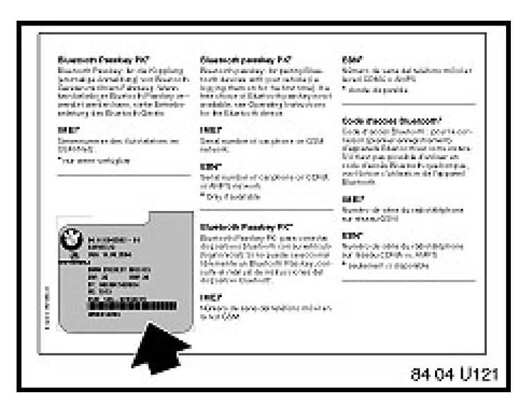

BMW Assist(R) - Integrated Bluetooth(R) Info.: Overview
SI B84 13 04Communication Systems
November 2007
Technical Service
This Service Information bulletin supersedes SI B84 13 04 dated March 2007.
[NEW] designates changes to this revision
SUBJECT
BMW Assist with Integrated Bluetooth
MODEL
E46 (3 Series) from 9/04 production (325i/iA from 10/04 production) with Premium Package (ZPP) or BMW Assist (SA 639)
E53 (X5) from 10/04 production with Premium Package (ZPP) or BMW Assist (SA 639)
E60, E61 (5 Series) from 9/04 production
E63, E64 (6 Series) from 9/04 production
E65, E66 (7 Series) from 3/05 production
E70 (X5) with Premium Package (ZPP) or BMW Assist (SA 639)
E83 (X3) from 9/04 production with Premium Package (ZPP) or BMW Assist (SA 639)
E85, E86 (Z4) from 10/04 production with Premium Package (ZPP) or BMW Assist (SA 639)
E90, E91, E92, E93 (3 Series) with Premium Package (ZPP) or BMW Assist (SA639)
INFORMATION
1. Starting with model year 2005, all vehicles equipped with BMW Assist (except the E65 and E66 7 Series starting from 3/05) now have integrated Bluetooth(R) capability. Currently, these vehicles will be arriving at your BMW Center with Bluetooth set to active. No retrofit coding is necessary in order to use this feature.
2. Voice activation functions
Voice input dialing with M-ASK, RAD-2 or CHAMP-equipped vehicles
^ Before dialing can take place, a nametag and phone number must be stored in the voice input phonebook. This phonebook is separate from the phonebook stored in the handset. Up to 50 voice input entries may be stored.
^ With the handset connected, press the voice input button on the steering wheel. Say "Save Name"; the dialog for storing a name is called up. Hint: For easy access to the "Communication" menu, one of the programmable MFL buttons on E60 vehicles may be set to "Telephone List". Refer to "Telephone List". Refer to [NEW] the vehicle owner's manual on how to set the programmable buttons.
^ Say the name and repeat the entry when prompted. The duration of the name in the phonebook must not exceed approximately 2 seconds.
^ Say the phone number upon request. The system will repeat the phone number back to you. If it is correct, save the phone number by saying "Save".
^ After the name and number are saved, the number can be dialed by saying "Dial name". The system dialog for selecting an entry is opened.
^ Say the name on request. Confirm the prompt with "Yes".
^ Pressing the phone icon button on the steering wheel will end the call.
Voice input dialing with CCC-equipped vehicles
^ With the handset connected and the CID displaying the "Communication" menu, press the voice input button on the steering wheel. Say "Dial Name". The phonebook used for voice input dialing is the same phonebook that is stored in the handset.
^ The system states, "Please say the name from the list".
^ Select and say one of the nametags from the telephone address book displayed on the CID.
^ The system says, "Would you like to be connected to (name tag)".
^ Respond with "Yes".
^ System says "Dialing".
^ Be sure to wait until the system tone is heard before speaking or the system may not recognize your response.
3. For E46 and E83 vehicles up to 3/05 production and E85 and E53 vehicles up to 4/05 production, voice activation functions are not part of the TCU. A separate SES module can be installed. Refer to the EPC.

^ E46, E83, E85 and E53 vehicles produced between 3/2004 and 8/2004 are equipped with a TCU that does not support Bluetooth. On these vehicles, the TCU can be replaced at the customer's expense with a 2005 MY TCU. Cradles may not be added to these vehicles because of wiring incompatibility.
^ Please disregard the Owner's Manual insert, shown to the left, indicating Bluetooth functionality. The hardware in these vehicles will not work correctly.
4. For E60, E63 and E64 vehicles produced from 3/04 to 8/04, Bluetooth functionality can be added by updating the vehicle software using CIP 13.2 or higher. After this is performed, a "Retrofit" of "Tel Bluetooth" needs to be performed. Follow the procedure as described in this Service Information for "Activating Bluetooth" and "Pairing the Handset". Vehicles prior to 3/04 would need to have the TCU replaced with the 2005 MY TCU at the customer's expense, and the vehicle updated to CIP 13.2 or higher. Phone docking cradles may not be added to these vehicles because of wiring incompatibility. Note: This software update and retrofit is not covered under warranty and is at the customer's expense.
5. Please refer to CenterNet for information on approved Bluetooth handsets. To access this information, follow the path as outlined below:
^[NEW] Visit www.bmwusa.com/bluetooth for a list of handsets that have passed BMW testing for compatibility.
^ For further information on the functionality of the telephone, consult the handset Owner's Manual.
^ For diagnosis and troubleshooting of the system, refer to SI B84 05 06 (Diagnosis of Bluetooth Handset Related Complaints).
^ For information about the E46, E83, E85, and E53, refer to the "Bluetooth User's Manual I-Bus vehicles" attached to this service information.
^ For information about the E60, E63, and E64, refer to the "Bluetooth User's Manual E60 vehicles" attached to this service information.
6. Stolen Vehicle Recovery service has also been added to the BMW Assist program. To access information about Stolen Vehicle Recovery, follow the path as outlined below:
^ Log into CenterNet.
^ From the "Menu" tab, select "BMW Assist".
^ Select "Stolen Vehicle Recovery Insurance Discount".
7. Refer to SI B84 15 03 for more information about BMW Assist
RETROFIT CODING FOR THE DOCKING CRADLE (NOT NECESSARY UNLESS THE CRADLE IS BEING ADDED)
Phone docking cradles can only be installed in 2005 MY or later vehicles with BMW Assist (SA 639) and Bluetooth wireless technology.
E83 (X3) and E85 (Z4)
1. Using the SSS (Software Service Station) or GT1, start CIP 15.2 or higher.
2. Select the appropriate model series selection.
3. Select the vehicle model.
4. Select "Load software".
5. Answer "No" to "Have control modules been replaced?".
6. Select "Retrofits".
7. Select "Retrofits".
8. Select "TEL Bluetooth".
9. Select "Added".
10. The following message will be displayed:
"Retrofit of Telephone with cradle selected. The Vehicle order is changed during the sequence. Continue only with "Continue" if the retrofitting scope is already fitted in the vehicle. Otherwise terminate the procedure with "Cancel".
11. Select "Continue".
12. Follow the on-screen prompts to finish coding.
13. Exit the CIP and check the functionality of the system.
E46 (3 SERIES) AND E53 (X5)
1. If the vehicle is equipped with Navigation, ensure that the warning message has been answered on the Board Monitor screen by pressing the large control knob.
2. Using SSS or GT1 with CD40 or higher, select Coding/Programming.
3. Select (3) ZCS/FA Coding.
4. Select E46 or E53 as applicable.
5. Select "Retrofit".
6. Page down and select "Bluetooth Telephone".
7. On the confirmation screen asking if correct, select "YES".
8. Complete the coding per the on-screen instructions.
9. Exit from coding and check the functionality of the system.
PAIRING PROCEDURE FOR I/K-BUS VEHICLES (E.G., E46, E53, E83, E85, ETC.)
1. The customer's handset must be verified for compatibility. To confirm whether or not the handset is compatible, visit www.bmwusa.com/bluetooth for a list of handsets that have passed BMW
testing for compatibility. Note the following disclaimer on this web site:
^ "This list is provided for reference only. The mobile phones listed here have passed compatibility tests as of the date of testing and meet or exceed minimum standards established by BMW. The list is not a warranty for phone performance or functionality. BMW makes no guarantees or warrantees as to the performance of each phone while connected to your BMW via Bluetooth Wireless Technology. Furthermore, software releases by BMW, the phone supplier or the wireless carrier dated after testing might alter compatibly results. While many phones are offered with Bluetooth Wireless Technology, not all phones support the necessary profiles to work with your BMW. BMW does not guarantee availability or functionality with all wireless carriers. Functions such as synchronizing the address book and transferring a call into or out of the vehicle may function differently from phone to phone".
2. Turn the key off and then to KLR or KL15.
3. The vehicle is ready for pairing for the first 2 minutes of key on.
4. If the R/T button on the MFL is pressed, "Activate Phone" appears on the MID or Board Monitor. For the E53 (X5), the seatbelt needs to be plugged in and the R/T button pressed on the MFL; "Activate Phone" appears in the Instrument Cluster.
5. During the pairing process, depending on the equipment, the indicator lights on the MID or Board Monitor display flash.
6. Your mobile phone should now be set to search for BT devices. See the Owner's Manual for your handset.
7. A request to enter a password, PIN, or code appears on the handset display, depending on your model. Enter the 'BLUETOOTH PASSKEY" (supplied with the vehicle literature), using the numerical keys on the handset, and confirm the input. Look for a confirmation message on the handset.
8. To conclude the pairing process, turn the key off.
9. Wait approximately 30 seconds before turning the key back on. The phone will now be connected when the key is turned on. It may take several minutes to initially load the phonebook stored in the handset, depending on the number of entries.
ACTIVATING BLUETOOTH ON VEHICLES EQUIPPED WITH A M-ASK OR CHAMP (E.G., E60, E63, E64, E70, ETC.)
1. The customer's handset must be verified for compatibility. To confirm whether or not the handset is compatible, visit www.bmwusa.com/bluetooth for a list of handsets that have passed BMW testing for compatibility. Note the following disclaimer on this web site:
"This list is provided for reference only. The mobile phones listed here have passed compatibility tests as of the date of testing and meet or exceed minimum standards established by BMW. The list is not a warranty for phone performance or functionality.
BMW makes no guarantees or warrantees as to the performance of each phone while connected to your BMW via Bluetooth Wireless Technology. Furthermore, software releases by BMW, the phone supplier or the wireless carrier dated after testing might alter compatibly results. While many phones are offered with Bluetooth Wireless Technology, not all phones support the necessary profiles to work with your BMW. BMW does not guarantee availability or functionality with all wireless carriers. Functions such as synchronizing the address book and transferring a call into or out of the vehicle may function differently from phone to phone".
2. This procedure must be carried out first in order to properly pair a handset to the vehicle.
3. From the start menu, press down briefly on the controller.
4. Scroll down to "Communication settings" and select.
5. Select "Bluetooth" and press the controller.
6. Select "Settings" and press the controller.
7. Select "Bluetooth communication active" and press the controller to activate the connection.
8. Exit back to the start menu.
Note:
Before a second handset can be paired to the vehicle, the phonebook must have completed the downloading process.
PAIRING A HANDSET TO A VEHICLE WITH RAD (E.G., E90, E91, E92, E93, ETC.)
1. The customer's handset must be verified for compatibility. To confirm whether or not the handset is compatible, visit www.bmwusa.com/bluetooth for a list of handsets that have passed BMW testing for compatibility. Note the following disclaimer on this web site:
"This list is provided for reference only. The mobile phones listed here have passed compatibility tests as of the date of testing and meet or exceed minimum standards established by BMW. The list is not a warranty for phone performance or functionality.
BMW makes no guarantees or warrantees as to the performance of each phone while connected to your BMW via Bluetooth Wireless Technology. Furthermore, software releases by BMW, the phone supplier or the wireless carrier dated after testing might alter compatibly results. While many phones are offered with Bluetooth Wireless Technology, not all phones support the necessary profiles to work with your BMW. BMW does not
guarantee availability or functionality with all wireless carriers. Functions such as synchronizing the address book and transferring a call into or out of the vehicle may function differently from phone to phone".
2. Turn the key on.
3. Press the "MENU" button.
4. Turn the rotary knob to highlight "Phone".
5. Press the soft-key under "Phone".
6. "Search for paired devices" is displayed.
7. Press the soft-key under "BT".
8. Press the soft-key under "SEARCH"[NEW] or "PAIR".
9. Note: On vehicles from 9/07 production, the word "SEARCH" has been replaced by "PAIR".
"Bluetooth devices pairable..."[NEW] or "Bluetooth phones pairable..." is displayed.
10. Refer to the Owner's Manual from the individual handset for detecting, connecting or coupling a Bluetooth unit, e.g., on the Motorola V551:
Select Settings/Connection/Bluetooth
Link/Handsfree/Look for devices.
11. The handset will now scan for discoverable Bluetooth devices.
12. Select the VIN number and Bond (Pair) the handset to the vehicle.
13. If the handset asks you to enter a Bluetooth passkey, go to Step 20.
14. "Ext. Device Ready" will be displayed.
15. Select the soft-key under "ADD".
16. Using the soft-keys of the radio, enter a user selectable passkey from 4 to 16 digits in length.
17. After your selectable passkey is entered in the radio, select the soft-key under "OK".
18. "Bluetooth pairing active.." is displayed in the radio.
19. At this point, enter the same passkey into the handset that you entered into the radio.
20. At this point, the handset is paired to the vehicle. Go to Step 27.
21. Enter a user-selectable passkey from 4 to 16 digits in length via the handset keypad and select "Enter" or "OK".
22. "Ext. Device Ready" will be displayed.
23. Select the soft-key under "ADD".
24. Using the soft-keys of the radio, enter a user selectable passkey from 4 to 16 digits in length.
25. After your selectable passkey is entered in the radio, select the soft-key under "OK".
26. At this point, the handset is paired to the vehicle.
27. The phonebook will then load (this may take longer after the initial pairing).
Note:
Before a second handset can be paired to the vehicle, the phonebook must have completed the downloading process.
28. Once the phonebook is fully loaded, then "normal" in vehicle features will be selectable, for example:
^ A-Z
^ TOP8
^ LAST8
^ CALLS
^ MISSED
PAIRING THE HANDSET TO THE VEHICLE MOST-BUS VEHICLES WITH CCC (E.G., E60, E63, E70, E90, ETC.
1. The customer's handset must be verified for compatibility. To confirm whether or not the handset is compatible, visit www.bmwusa.com/bluetooth for a list of handsets that have passed BMW testing for compatibility. Note the following disclaimer on this web site:
^ "This list is provided for reference only. The mobile phones listed here have passed compatibility tests as of the date of testing and meet or exceed minimum standards established by BMW. The list is not a warranty for phone performance or functionality. BMW makes no guarantees or warrantees as to the performance of each phone while connected to your BMW via Bluetooth Wireless Technology. Furthermore, software releases by BMW, the phone supplier or the wireless carrier dated after testing might alter compatibly results. While many phones are offered with Bluetooth Wireless Technology, not all phones support the necessary profiles to work with your BMW. BMW does not guarantee availability or functionality with all wireless carriers. Functions such as synchronizing the address book and transferring a call into or out of the vehicle may function differently from phone to phone".
2. Turn the key on.
3. From the start menu, press down briefly on the controller.
4. Scroll down to "Communication settings" and select.
5. Select "Bluetooth" and press the controller.
6. Select "Phone" and press the controller.
7. Once the message "Bluetooth connectable in this menu" is displayed, the vehicle is in pairable mode.
8. Refer to the Owner's Manual for the individual handset for detecting, connecting or coupling a Bluetooth unit, e.g., on the Motorola V551: Select Settings/Connection/Bluetooth Link/Handsfree/Look for devices.
9. The handset will now scan for discoverable Bluetooth devices.
10. In the handset, BMW and the last 5 digits of the VIN will be displayed. Select the VIN number to Bond (Pair) the handset to the vehicle.
11. If Bond (Pair) with BMW and the last 5-digits are displayed in the handset, go to Step 15.
12. Via the CID, select "Add device" and press the controller.
13. In order to pair, you must enter a user-selectable passkey in the CID. The passkey can be any number that you choose, up to 16 digits long.
14. Select "Confirm passkey".
15. Follow the handset's on-screen prompts and enter the same user-selectable passkey into the handset. Depending on the handset, you will have approximately 30 seconds to enter the passkey.
16. Via the handset, select the BMW device and the last 5 digits of the VIN to Bond (Pair).
17. In order to pair, you must enter a user-selectable passkey via the handset. The passkey can be any number that you choose, up to 16 digits long.
18. Via the CID, select "Add device" and press the controller.
19. Enter the same user-selectable passkey via the CID.
20. Select "Confirm passkey".
21. After a few seconds, your device will be listed.
22. Depending on the handset, the device will ask you to accept connection.
23. You must exit this menu in order for the handset to operate correctly.
24. Turn the key off. When the key is turned on, the handset will connect and transfer the phonebook entries from the handset. This may take several minutes, depending on the size of the phonebook.
25. Up to 4 handsets can be paired to the vehicle. Before a second handset can be paired to the vehicle, the phonebook must have completed the downloading process.
26. Please consult the Owner's Manual of the handset for additional information.
PAIRING INSTRUCTIONS - E65 FROM 3/05
1. The customer's handset must be verified for compatibility. To confirm whether or not the handset is compatible, visit www.bmwusa.com/bluetooth for a list of handsets that have passed BMW
testing for compatibility. Note the following disclaimer on this web site:
^ "This list is provided for reference only. The mobile phones listed here have passed compatibility tests as of the date of testing and meet or exceed minimum standards established by BMW. The list is not a warranty for phone performance or functionality. BMW makes no guarantees or warrantees as to the performance of each phone while connected to your BMW via Bluetooth Wireless Technology. Furthermore, software releases by BMW, the phone supplier or the wireless carrier dated after testing might alter compatibly results. While many phones are offered with Bluetooth Wireless Technology, not all phones support the necessary profiles to work with your BMW. BMW does not guarantee availability or functionality with all wireless carriers. Functions such as synchronizing the address book and transferring a call into or out of the vehicle may
function differently from phone to phone".

2. Ensure that the Control Display is at least past the "Accept" screen.
3. Turn ignition on. For the first 2 minutes of ignition on, the vehicle is in pairing mode.
4. Have the Bluetooth "Passkey" available. This can be found in the insert in the information kit in the vehicle.
5. Refer to the Owner's Manual of the individual handset for detecting, connecting, or coupling a Bluetooth unit, e.g., on the Motorola V600: Select Settings/Connection/Bluetooth Link/Handsfree/Look for devices.
6. The handset will now scan for the Bluetooth devices available.
7. The vehicle will be identified by the VIN number displayed in the handset.
8. Select the VIN number and Bond (Pair) the handset to the vehicle.
9. When prompted, enter the Passkey as noted from the card in the information kit.
10. Once the pairing is complete, the Control Display will switch to "Phone Connected".
11. Wait to pair additional handsets until the
phonebook is fully loaded.
DIAGNOSIS OF BLUETOOTH RELATED COMPLAINTS
Refer to SI B84 05 06 for helpful hints.
WARRANTY INFORMATION
Information only
ATTACHMENTS
view PDF attachment B841304Bluetooth_User_Manual_E60_E63_E64.
view PDF attachment B841304Bluetooth_User_Manual_IBusus.

Disclaimer